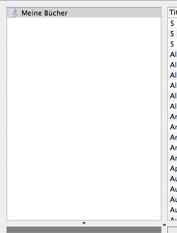

Bücherlisten
Das Grundgerüst der graphischen Oberfläche von Books besteht aus 4 Teilen
- dem Fenster für Bücherlisten, der Büchersammlung, der Zusammenfassung
und dem Titelbild. Oben links befindet sich das Fenster für Bücherlisten.
Sie kennen wahrscheinlich schon Wiedergabelisten aus iTunes und Alben
aus iPhoto. Bei iTunes gibt es zwei verschiedene Arten von Wiedergabelisten
- normale Wiedergabelisten und intelligente Wiedergabelisten. Bei iPhoto
gibt es normale Alben und intelligente Alben. Books baut auf dasselbe
Schema auf - nur werden bei Books normale Bücherlisten und intelligente
Bücherlisten genutzt.

Auf dem Bildschirmphoto sehen Sie eine normale Bücherliste. Das erkennen Sie anhand des Symbols, welches ein einfaches Textdokument zeigt. Intelligente Bücherlisten erkennen Sie an einem Zahnradin der linken unteren Ecke des Textdokument-Symbols.
Bücherlisten
Normale Bücherlisten enthalten normale Einträge, die Sie von einer Bücherliste in eine andere verschieben können, so daß das Buch immer in dieser Bücherliste angezeigt wird. Um eine normale Bücherliste anzulegen, klicken Sie auf den Eintrag „Neue Bücherliste” in der Symbolleiste.
Intelligente Bücherlisten
Intelligente Bücherlisten sind dynamischer. Bücher werden
darin nach bestimmten Kriterien sortiert. Wenn Sie eine intelligente
Bücherliste auswählen und dann den Eintrag mit der Aufschrift «Intell.
Bücherliste bearbeiten» in der Symbolleiste anklicken,
dann erhalten Sie mehrere Möglichkeiten, Ihre intelligente Bücherliste
Ihren speziellen Bedürfnissen anzupassen.
In dem Auswahlfenster für intelligente Bücherlisten können
Sie dann selbst entscheiden, ob die Bücherliste allen oder einigen
der Kriterien entsprechen soll. Dabei steht Ihnen eine große
Auswahl von Feldern und Werten zur Verfügung. Wenn alle Bücher,
die zum Beispiel von Johann Wolfgang von Goethe geschrieben wurden,
über eine Bücherliste angezeigt werden sollen, dann wählen
Sie das Feld «Autor(en)» in der ersten Spalte und in der
zweiten Spalte den Wert «ist» aus. In das Textfeld geben
Sie dann «Johann Wolfgang von Goethe» ein. Wenn Sie seine
Werke aber noch weiter einschränken wollen und zum Beispiel nur
alle Faust-Bücher angezeigt werden sollen, dann wählen Sie
in der zweiten Zeile zusätzlich noch das Feld «Titel» in
der ersten Spalte, den Wert «enthält» in der zweiten
Spalte aus und geben in das Textfeld den Begriff «Faust» ein.
Vergewissern Sie sich, daß die intelligente Bücherliste
allen Kriterien entsprechen muß. Nachdem Sie das Auswahlfenster
geschlossen haben, wird die Bücherliste durch Books automatisch
aktualisiert und es werden nur noch die Bücher in der Büchersammlung
dargestellt, die Ihren persönlichen Kriterien entsprechen. Um eine
intelligente Bücherliste anzulegen, klicken Sie auf den Eintrag „Neue
Intell. Bücherliste” in der Symbolleiste.